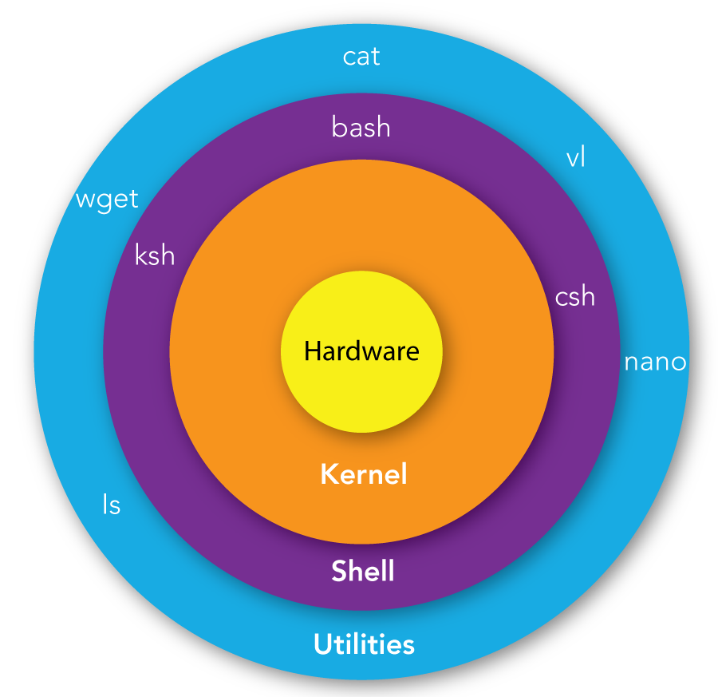
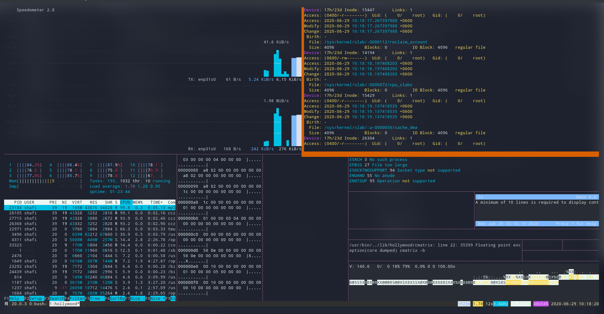
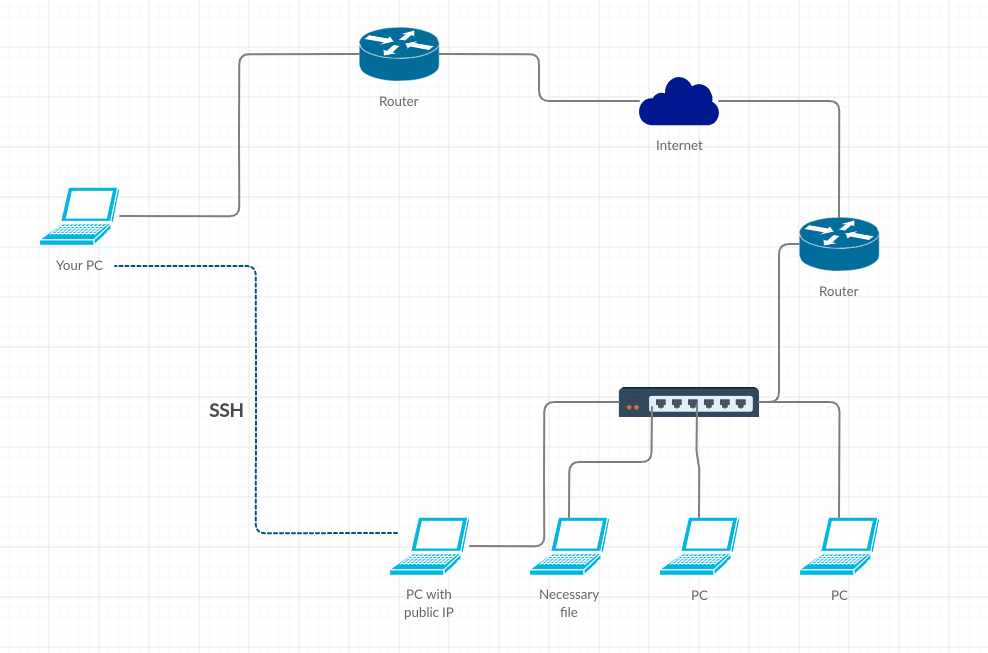
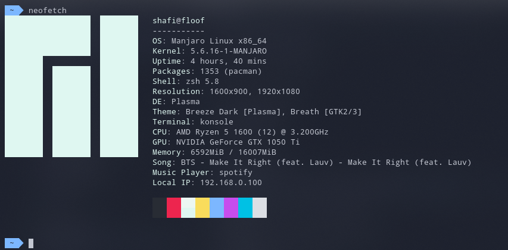
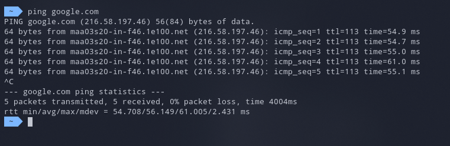
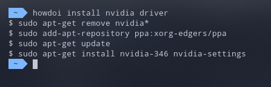

name: title class: center, middle, inverse # Technical Talk on CLI and Shell --- name: introduction .left-column[ # Introduction ] .right-column[ ## Mehedi Imam Shafi ##### Research and Development Engineer .footnote-small[[mehedi-shafi.github.io](https://mehedi-shafi.github.io)] ] --- name: agenda .left-column[ # Contents ] .right-column[ * [Introduction](#introduction) * [Shell](#shell) * [CLI](#cli) * [Advantages of CLI](#advantages-of-cli) * [Files and directory](#basic-files-and-drectories) * [How and where to get help](#how-do-i-know) * [More files and directory actions](#advanced-flie-and-directories) * [Command Stacking](#command-stacking) * [System processes and managing them](#processes) * [Secure Shell (SSH)](#ssh) * [Session in CLI](#session) * [Workflow in CLI](#workflow) * [Scripting in CLI](#scripting) * [Utilities](#utilities) * [Conclusion](#conclusion) * [Resources](#resources) ] --- name: shell .left-column[ # SHELL ] .right-column[  ] .footnote-small[Credit: https://mindmajix.com/shell-scripting-tutorial] --- name: gui-shell .left-column[ ### GUI Based Shell ] .right-column[ <img src="assets/gui_shell.png" width="500px" height="500px" /> ] --- name: cli-shell .left-column[ ### CLI Based Shell ] .right-column[ ] --- name: cli-shell-2 .left-column[ ### CLI Based Shell ] .right-column[  ] --- name: cli class: center, middle # So what is CLI? --- name: advantages-of-cli .left-column[ # Advantages ] .right-column[ * Faster development ] --- name: advantages-of-cli-2 template: advantages-of-cli .right-column-append[ * Easier to test ] --- name: advantages-of-cli-3 template: advantages-of-cli-2 .right-column-append[ * Can be very precise ] --- name: advantages-of-cli-4 template: advantages-of-cli-3 .right-column-append[ * Can later be easily integrated with GUI ] --- name: advantages-of-cli-5 template: advantages-of-cli-4 .right-column-append[ * Easier to get help ] --- name: advantages-of-cli-6 template: advantages-of-cli-5 .right-column-append[ * Never ugly ] --- name: basic-files-and-drectories class: center, middle # Basic files and directories operations --- name: basic-files-and-drectories-2 .left-column[ ## Commands ] .right-column[ ```bash $ ls # to know the contents of current directory $ pwd # to know where in the file system you are now $ whoami # who are you logged in as $ cd # change directory $ pushd # push current directory to stack $ popd # pop last pushed directory from stack $ file # find the type of file $ find # find a specific file in the system $ cp # copy a file $ mv # move a file (rename as well) $ rm # remove a file (or directory) $ du # check consumed file size $ tree # get the directory tree nicely printed ``` ] --- name: how-do-i-know class: center, middle # How do I get help? ### How to know which option to use? <img src="assets/confused.png" width="200px" height="200px" style="position: fixed; left: 50px; bottom: 50px;" /> --- name: how-do-i-know-2 .left-column[ ## Get help ## `man` ] .right-column[ ```bash $ man What manual page do you want? For example, try 'man man'. $ man ls LS(1) User Commands LS(1) NAME ls - list directory contents SYNOPSIS ls [OPTION]... [FILE]... DESCRIPTION List information about the FILEs (the current directory by default). Sort entries alphabetically if none of -cftuvSUX nor --sort is specified. ..... ``` ] --- name: how-do-i-know-3 .left-column[ ## Get help ## `apropos` ] .right-column[ ```bash $ apropos apropos apropos (1) - search the manual page names and descriptions ``` ] --- name: how-do-i-know-4 .left-column[ ## Get help ## `whatis` ] .right-column[ ```bash $ whatis cat cat (1) - concatenate files and print on the standard output cat (1p) - concatenate and print files ``` ] --- name: how-do-i-know-5 .left-column[ ## Get help ## `which` ] .right-column[ ```bash $ which python /usr/bin/python ``` ] --- name: questions class: center, middle, inverse ## Questions from chat? --- name: advanced-flie-and-directories class: center, middle # Some more files and directory stuffs. --- name: advanced-flie-and-directories-2 .left-column[ ## Commands ] .right-column[ ```bash $ cat # print file content to terminal and ... $ touch # create file and ... $ nano # edit files in terminal $ vim # edit files in terminal but.. $ head # print first few lines of a file $ tail # print last few lines of a file $ more $ less $ chmod # change permission mode of a file or directory $ chown # change ownder of a file ``` ] --- name: command-stacking class: center, middle # Command Stacking --- name: command-stacking-2 .left-column[ ## Commands ] .right-column[ ```bash $ mkdir junk && cd junk && touch test.text $ cat test.txt | wc -l ``` ] --- name: processes class: center, middle # System processes and managing them --- name: process-2 .left-column[ ## Commands ] .right-column[ ```bash $ ps # get list of processes $ pidof $ ps aux | grep -i google $ kill <pid> $ htop ``` ] --- name: questions-2 template: questions --- name: ssh class: center, middle # Secure Shell (SSH) --- name: ssh-1 .left-column[ # SSH ] .right-column[ * What is ssh? ] --- name: ssh-2 template: ssh-1 .right-column-append[ * What is it used for? ] --- name: ssh-3 template: ssh-2 .right-column-append[ * SSH Key * What are they? * Where are they used? ] --- name: ssh-4 class: center, middle # Let's connect to a server. --- name: ssh-5 .left-column[ # SSH ] .right-column[  ] --- name: session class: center, middle # Session --- name: session-2 .left-column[ # Session ] .right-column[ * Terminal vs Terminal Emulator * History ```bash $ history | tail -n 50 ``` ] --- name: session-3 .left-column[ # Session ] .right-column[ ### Persistent programs * Server * Long scripts * Downloads ### Tools * screen * tmux ] --- name: questions-3 template: questions --- name: workflow class: center, middle # Workflow and CLI --- name: workflow-2 .left-column[ # Workflow ] .right-column[ * tmux * multi-panned session * vim workflow * git * git commit * pre-commit-hooks * lint ] --- name: scripting class: center, middle # Scripting the CLI --- name: scripting-2 .left-column[ # Scripting ] .right-column[ * variables * configuration files * ssh keys * alias * simple everyday functions * complex everyday functions ] --- name: utilities class: center, middle # Some CLI Utilities --- name: utilities-2 .left-column[ # Utilities ] .right-column[ * neofetch  ] --- name: utilities-3 .left-column[ # Utilities ] .right-column[ * ping  ] --- name: utilities-4 .left-column[ # Utilities ] .right-column[ * wget * curl ] --- name: utilities-5 .left-column[ # Utilities ] .right-column[ * howdoi  ] --- name: conclusion class: middle, center, conclusion # How did I do? ### [mehedishafi@hotmail.com](mailto:mehedishafi@hotmail.com) ### https://github.com/mehedi-shafi --- name: resources .left-column[ # Resources ] .right-column[ #### [https://github.com/mehedi-shafi/cli-talk/](https://github.com/mehedi-shafi/cli-talk/) ]